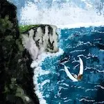
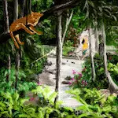
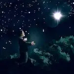
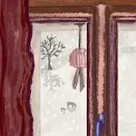
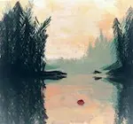
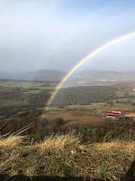

2019
Mai
Avril
- 15 — À propos
Février
-
17 —
Creacover 2019 : Bilan

-
12 —
Creacover 2019 - Partie 2

- 10 —  Balade un dimanche
- 04 — Pliage de serviette amusant
Akemi no sekai
Bienvenue sur Les mondes d’Akemi : un blog créatif et plein de curiosité où je partage mes écrits, dessins, critiques de films, séries et livres, mes balades et découvertes, ainsi que mon apprentissage du japonais. Entrez dans mon univers !